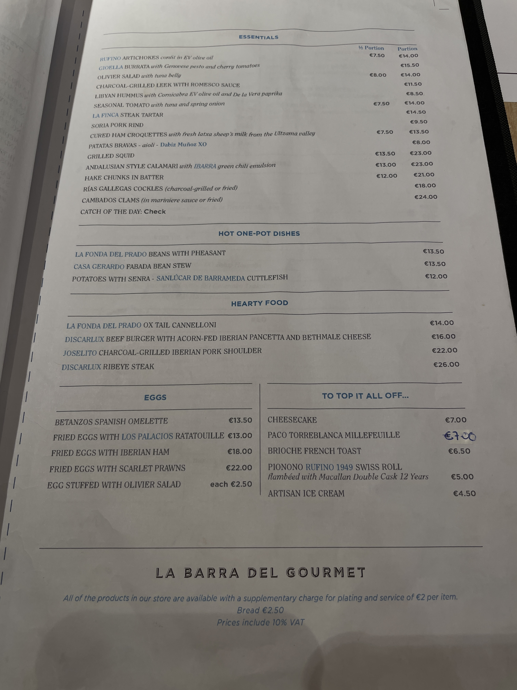

週旅行英文課程

菜單主題單字庫
真實菜單例句拆解
直接在網頁閱讀與跟讀
Course Path
每週課程路線
四週完成菜單單字、真實菜單、點餐口說與旅行實戰。點選任一週，就會直接前往該週的學習內容。
Vocabulary
單字庫與 KK 音標
搜尋英文、中文或 KK 音標。每張卡片都可直接聽發音。
Speaking Studio
餐廳與旅行口說
把常用句拆成餐廳、確認食材、結帳與旅行三組，反覆跟讀到能自然說出口。
Daily Practice
今天的 10 分鐘練習
每天不用多，照三步驟做：聽、看、說。旅行時真正派上用場的是反覆練過的句子。
聽 3 句
播放任一口說卡，先聽語調，不急著記全部單字。
拆 1 道菜
到菜單解讀區，選一道菜，判斷它是海鮮、肉類、醬料或烹飪方式。
說 1 次完整點餐
用「I would like...」加上一道菜名，練成真正能出口的句子。
Expansion Space
我的擴充筆記
之後遇到新菜單、新城市、新句型，可以直接加進來。這是預留給下一階段內容擴充的位置。